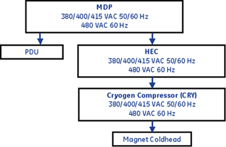
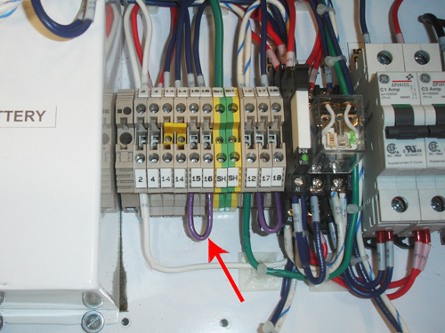

Operating Documentation
Direction 5670000, Rev# 1
Optima MR450w 1.5T Service Methods
Module Version 7.0, Version Date 5/18/09
Operating Documentation |
| Required Persons | Preliminary Reqs | Procedure | Finalization |
|---|---|---|---|
| 1 | Not Applicable | 15-60 minutes | Not Applicable |
The Power On Sequence is slightly different with DVMR systems. The Main Disconnect Panel (MDP) and the Heat Exchange Cabinet (HEC) are required to power the Cryogen Cooler Compressor (CRY) and the Magnet Coldhead (See Illustration 1). This document provides the installation checklist for powering on the system, and an overview description of the MDP, HEC, CRY, and the Power Distribution Unit (PDU).
Illustration 1: Power Flow Block Diagram

Main Components
The following provides a brief overview of each main component in this sequence:
Main Disconnect Panel (MDP)
The MDP contains a control power transformer that is set to 480Vac by default. For sites with a different customer supplied voltage, the control power transformer wiring will need to be changed. The MDP also contains a temporary jumper used to power up the system. That jumper will need to be removed. See Illustration 3 and Table 2 for more details. The temporary jumper is used until the remote Emergency Off Pushbuttons are installed.
Heat Exchange Cabinet (HEC)
The HEC contains a control power transformer that is set to 480Vac by default. For sites with a different customer supplied voltage, the control power transformer wiring switch will need to be changed. The HEC contains the power interface to the Cryogen Cooler Compressor (CRY). In order to power the coldhead after magnet delivery, the power cabling will need to be wired from the MDP to the HEC, and from the HEC to the Cryo Cooler. The power cable between the MDP and the HEC will be customer supplied and installed.
Cryogen Cooler Compressor (CRY)
The CRY receives power from the HEC. The coldhead power cable will need to be installed to power the coldhead.
Power Distribution Unit (PDU)
The PDU is setup for 480Vac by default. For sites with a different customer supplied voltage, the power wiring will need to be changed. The power cable between the MDP and the PDU will be customer supplied and installed. The overload and short circuit settings are dependent upon the voltage input and may need to be changed if the input voltage is changed.
List of Procedures
This document contains the following Power On Checklist procedures:
Confirm the Main Disconnect Panel (MDP) Voltage Selection
Confirm the Main Disconnect Panel (MDP) Jumper Interlock has been removed
Confirm the Heat Exchange Cabinet (HEC) Voltage Selection
Confirm Internal Power Wiring to the Power Distribution Unit (PDU)
Confirm Overload and Short Circuit Trip Settings for the PDU Input Circuit Breaker
| Item | Qty | Effectivity | Part# | Manufacturer | |
|---|---|---|---|---|---|
| Digital Voltmeter | 1 | - | - | - | |
| ||||
| ELECTROCUTION HAZARD. | ||||
| HIGH VOLTAGE PRESENT. | ||||
| USE PROPER LOCK OUT/TAG OUT PROCEDURES BEFORE CHANGING ANY SETTINGS. |
The Main Disconnect Panel is shipped with the default voltage setting of 480 VAC.
Confirm that the control power transformer connections are in the correct configuration for your site.
Table 1: Control Power Transformer Connection Configuration
| Incoming Voltage | Transformer Terminal |
|---|---|
| 480 VAC | H4 |
| 380, 400, or 420 VAC | H3 |
If the power connections are not configured properly, have the proper personnel correct the wiring connection. See MDP Operation and Maintenance Manual for additional details.
Illustration 2: MDP Control Power Transformer H4 Input Wiring

The Main Disconnect Panel is shipped with the E-off jumper installed.
Confirm that the E-off jumper has been removed.
Table 2: Location of Jumper
| Jumper Description | MDP Terminals |
|---|---|
| Emergency Off Jumper - Replaced by remote E-Off Push button(s) | 15 & 16 |
If the jumper is not removed, have the proper personnel correct the wiring. See MDP Operation and Maintenance Manual for additional details.
Illustration 3: MDP Terminal Board with Jumpers Installed

Follow the table below to confirm the transformer switch is in the proper position. See Illustration 4.
Table 3: Transformer Switch Position
| Incoming Voltage | HEC Switch Position |
|---|---|
| 480, 420, or 400 VAC | Up |
| 380 VAC | Down |
| NOTE: | The Heat Exchange Cabinet can operate at 480 VAC or 380 VAC. |
If the switch is not in the correct position, change the switch position.
Illustration 4: HEC Voltage Selection Switch

The PDU is shipped with the default voltage setting of 480 VAC.
Remove the small cover plate which is held in place by two screws.
Illustration 5: Input Voltage Select Small Cover

Confirm that the three Input Voltage Selection Terminal Blocks are wired in the correct configuration for your site. If the power connections are not configured properly, ensure that the proper personnel correct the wiring connection. See PDU Operation and Maintenance Manual for additional details.
Illustration 6: Input Voltage Selection - Set at 480VAC

The overload and short circuit trip settings for the Input Circuit Breaker must be set to the correct values corresponding to the input voltage.
Remove the small cover plate under the main circuit breaker which is held in place by a single screw on each side and lift open the transparent plastic cover on the lower portion of the circuit breaker to give access to the DIP switches controlling the circuit breaker operation.
The illustration below shows the position of the DIP switches for each input voltage selection. Confirm the switches immediately under the letter “L” are configured correctly.
Illustration 7: Circuit Breaker DIP Switch Settings

| NOTE: | If the DIP switches are not configured correctly, ensure that proper personnel correct the dip switches settings after following instructions in the PDU Operation and Maintenance Manual. |
Select Installation Calibration Wizard checklist items that were confirmed as completed.